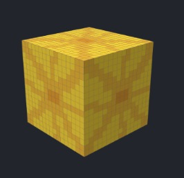

What in the World? (Team 60)
Advika Bhike, Catherine Chu, Eshani Jha, Malavikha Sudarshan
GitHub: https://github.com/cal-cs184-student/matcha
Website: https://cal-cs184-student.github.io/matcha/final.html
Final Slides:
Final Video:
Abstract
In this project, we designed new textures to render in Minecraft using Blockbench. We created two different themes of objects: one themed to Japan (which included cherry blossom blocks) and one themed to the Lorax movie (with the big-headed orange fish). We also programmed a color-bleeding filter over the whole scene, using Gaussian weights as a convolution filter to simulate the watercolor effect of a whole painting.
Technical Approach
The project implemented a set of custom shaders within Unity to stylize a Minecraft-inspired world. The approach was grounded in techniques from “Solid Texture Synthesis from 2D Exemplars,” adapting 2D textures such as cherry blossoms and cobblestones into synthesized 3D surfaces. These were mapped onto vanilla Minecraft-style models, including trees and paths.
To achieve the watercolor aesthetic, the style shader integrated multiple visual techniques: soft shading with light falloff, Gaussian blur, global desaturation, and paper-like noise. These non-photorealistic rendering (NPR) techniques emulated smooth, blended brush strokes on textured surfaces, contributing to the thematic consistency of the Japanese setting.
Lightweight animations were added to improve environmental realism. A Unity script animated butterflies orbiting trees using sine and cosine functions, and vertex shader noise displaced tree models to simulate wind swaying. Both effects were synchronized and performance-tested to ensure stability within gameplay.
Challenges included ensuring shader compatibility across versions of Unity and Minecraft rendering interfaces, and minimizing visual artifacts such as texture distortion and jagged edges. These were addressed through mipmapping, bilinear filtering, and iterative debugging of vertex-level functions.
Key lessons included deeper familiarity with Unity’s shader pipeline, improved debugging workflows for graphical programming, and strategies for managing performance trade-offs while designing stylized effects.
Results
Final outputs include:
- Textured tree trunks and paths with cherry blossom and cobblestone patterns
- Watercolor shader applied to blocks and environment
- Butterfly and swan entities with stylized textures
- Animated butterfly movement and tree vertex noise for swaying
- Packaged zip folder containing a bundled shader and resource pack
Performance evaluation confirmed stable FPS (~60) with all shaders and animations active, and rendering quality was quantitatively evaluated using SSIM and MSE comparisons to reference textures. Artifacts were minimal following shader refinement.
Here are some of the textures we designed (see slides and video for more examples):

|

|

|
|

|

|
|
|
References
- Lefebvre, Sylvain, and Hugues Hoppe. “Appearance-Space Texture Synthesis.” ACM Transactions on Graphics (2006).
- Unity Shader Graph Documentation
- OptiFine and Blockbench Documentation
Contributions
- Advika Bhike: Style shader implementation, texture design, animation scripting
- Catherine Chu: Texture mapping logic, Lorax-world shaders, testing and debugging
- Eshani Jha: Japan-world textures and butterfly/swan entity creation
- Malavikha Sudarshan: Watercolor shading logic, tree sway shader, performance evaluation